name: inverse layout: true class: center, middle, inverse --- ##Analisis of the oportunities to enhace the circular economy of electronics in Milazzo ###eReuse.org Project .footnote[[Electronic Reuse - ereuse.org](http://www.ereuse.org) hello@ereuse.org hello@usody.com] --- template: inverse ## Introduction ### Circular consumption of digital devices --- layout:false ## Circular consumption of digital devices <!--Introducir el contexto: grandes organizaciones que descartan productos, explicar el proceso de refurbishment) --> 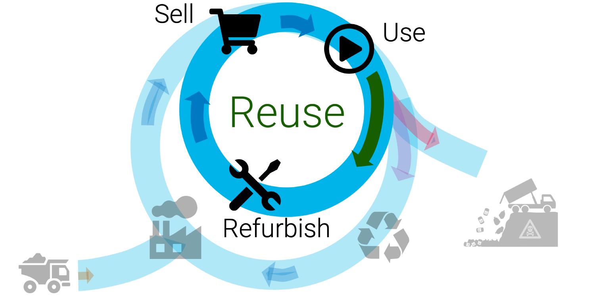 --- ## Circular consumption of digital devices 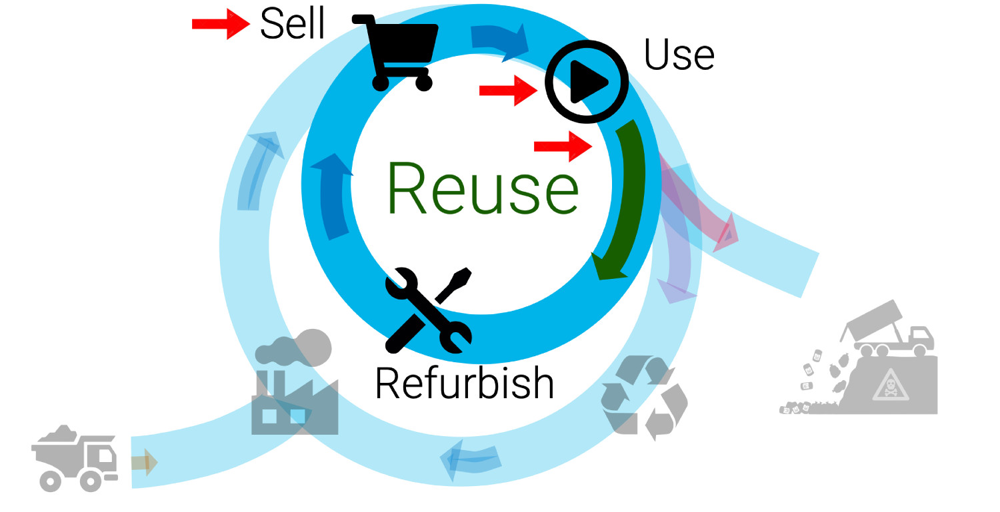 <!-- How to enhace circular economy of electronics in Milazzo. That means: repair, reuse and recycle digital devices such as phones and laptops. We have analized barriers and actors in milazzo about circular economy. Mapped their necessities and identifyied current oportunities. The oportunity arise when an actor (owner) discard a device that can be refurbished We have mapped some discarting points in Milazzo with potential devices for refurbish Also we are empowering a refurbisher center in Istituto Majorana Come on: go ahed. --> --- # eReuse.org ## Bootstrap local and autonomous platforms for reusing electronics ensuring final recycling * Our members are local groups, business and organizations that collect, refurbish and resell digital devices * Our open source solutions empowers them to collect and purchase used devices, refurbish them and offer quality certified products on the second-hand market. They can ensure final recycling. 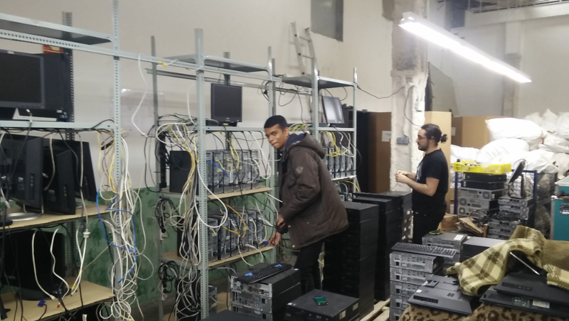 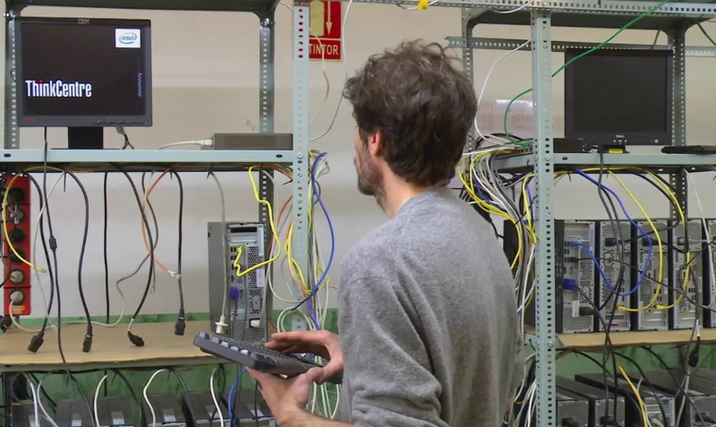 --- template: inverse ## Diagnostic --- layout: false .left-column[ ## Actors ### Valentino ] .right-column[ ##Repair: Valentino *** ###A repair shop in Milazzo but only mobiles > If the owner doesn't want to pay for the repair the mobile phone remains in a drawer 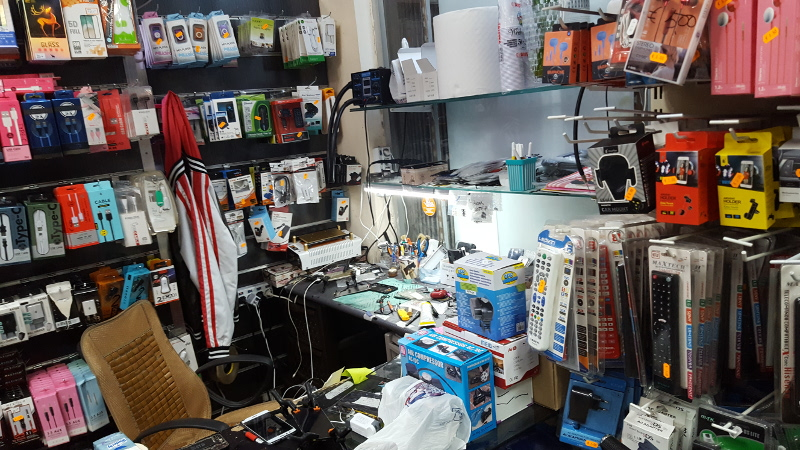 ] --- layout: false .left-column[ ## Actors ### Valentino ### Fiorello ] .right-column[ ## Scrap: Fiorello *** ###A scrap center in Milazzo > He's got a lot of cell phones!!, make him an offer. 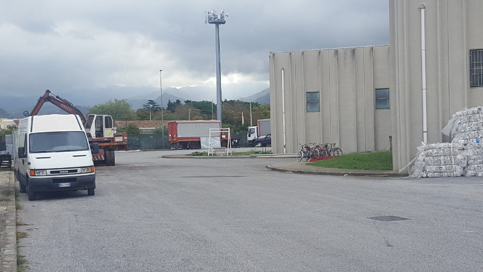 ] --- layout: false .left-column[ ## Actors ### Valentino ### Fiorello ### Katia ] .right-column[ ## Scrap: Katia *** ###A scrap center in Milazzo > Electronics sold by weight to a recycler (Antonio) 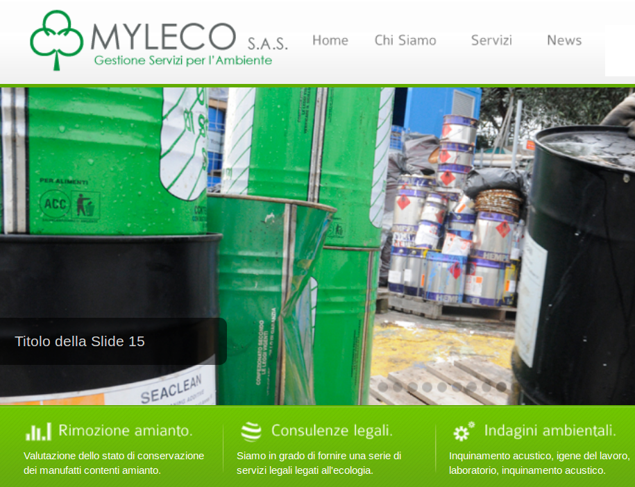 ] --- layout: false .left-column[ ## Actors ### Valentino ### Fiorello ### Katia ### Antonio ] .right-column[ ## Recycler: Antonio *** ###A recycler center in Milazzo > Potentially reusable products are offered to a refurbisher and what is not reusable is recycled to recover raw materials. 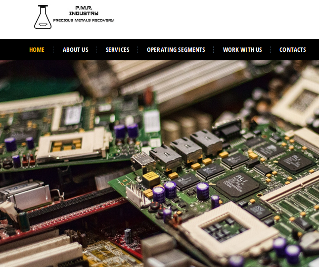 ] --- layout: false .left-column[ ## Actors ### Valentino ### Fiorello ### Katia ### Antonio ### Francesco ] .right-column[ ## Second hand seller: Francesco *** ###A second hand shop in Milazzo > Francesco buys second hand devices to refurbishers. 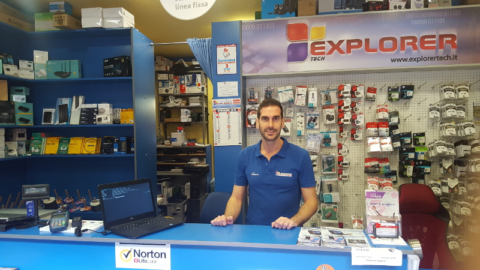 ] --- template: inverse ## Opportunity Analysis --- layout:false ## Oportunities for refurbishment 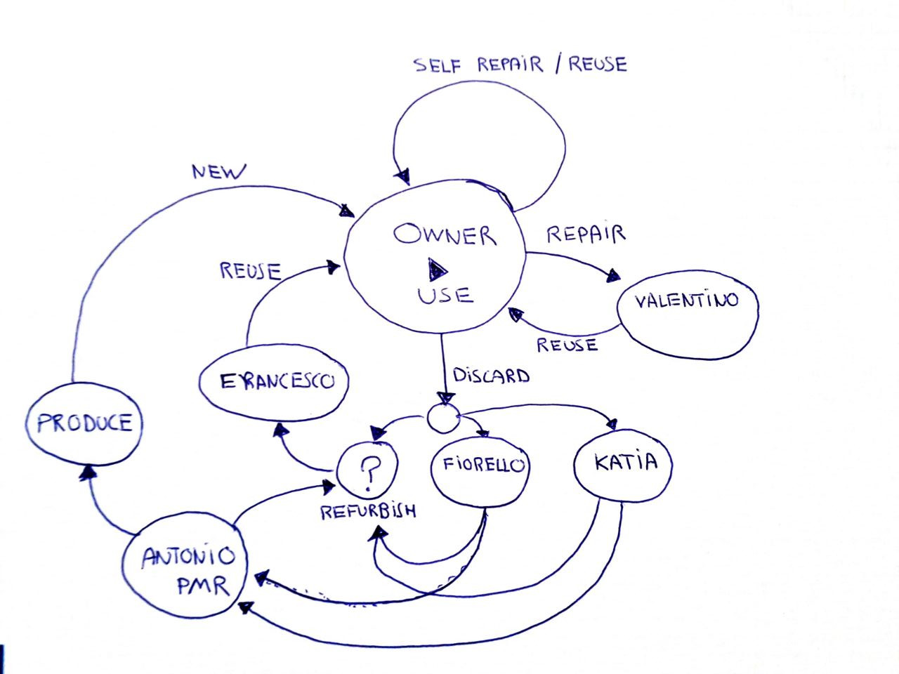 --- template: inverse ## Action --- layout:false ## A refurbish center in Istituto Majorana * Students want to learn how to repair their mobiles and laptops * Receive training in electronics, mechanics, telecommunications and information technology 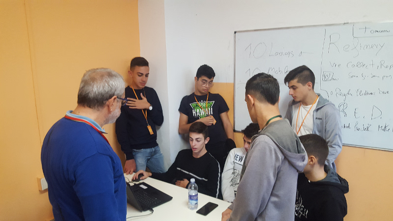 --- layout:false 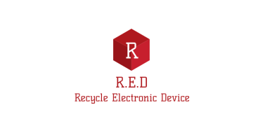 ## R.E.D: Recycling Electronic Devices ### School Project Make Easier Circular Economy 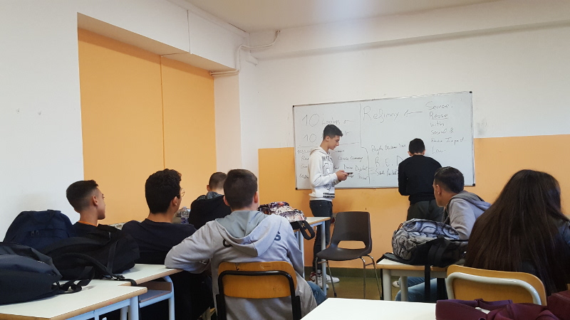 --- template: inverse ##Future ###Potenziare gli attori di Milazzo per la ricondizionamento. L'istituto forma i futuri tecnici per svolgere questo compito --- template: inverse ##Analisis of the oportunities to enhace the circular economy of electronics in Milazzo ###eReuse.org Project .footnote[[Electronic Reuse - ereuse.org](http://www.ereuse.org) hello@ereuse.org hello@usody.com]